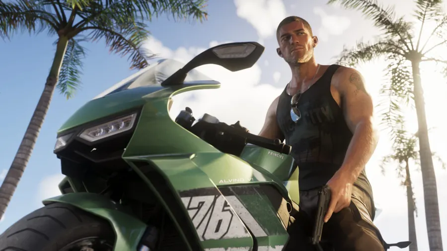
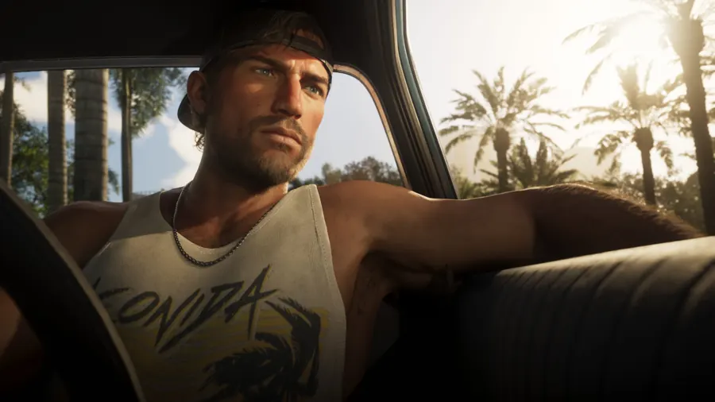

Everyone Rockstar has officially introduced in GTA 6, and every confirmed region of Leonida, explained simply. Nothing here spoils the story.
01The story setup
GTA 6 follows Jason Duval and Lucia Caminos, a couple pulled into crime across the sunny, chaotic state of Leonida. After a job goes wrong, they get caught up in a criminal conspiracy that stretches across the whole state.
Released 19 November 2026 on PS5 and Xbox Series X|S. No PC version has been announced yet. See the PC status page.
02Main characters
PLAYABLE


⇄
Jason Duval
Ex-soldier turned Keys hustler
Grew up around con artists and small-time crooks.
Served in the Army, then drifted into work for drug runners in the Leonida Keys.
Story contacts and side-mission givers players meet across Leonida, listed by the chapter they first show up in. No spoilers about what happens to them.
D✈️
Donnie
Pilot on Jason's early smuggling runs
First met: Ch. 1
M🔧
Mandy
Keys local who needs plumbing and rent help
First met: Ch. 1
K🤿
Kenton
Hands out diving and treasure jobs
First met: Ch. 1
MK💑
Mattia & Kat
A couple with work to offer
First met: Ch. 1
M🚗
Moses
Vehicle theft contact
First met: Ch. 2
B🛻
Billy
Runs the Thrillbillies side missions from the Mud Club
Forested hills and park land in the north. The outdoorsy side of Leonida, made for trails, off-roading and wildlife.
05Quick answers
Who are the main characters in GTA 6?
Jason Duval and Lucia Caminos are the two leads. Rockstar has also introduced Cal Hampton, Boobie Ike, Dre'Quan Priest, Real Dimez (Bae-Luxe and Roxy), Raul Bautista and Brian Heder.
Where is GTA 6 set?
In Leonida, Rockstar's take on Florida. Confirmed regions: Vice City, Leonida Keys, Grassrivers, Port Gellhorn, Ambrosia and Mount Kalaga.
Is Vice City the whole map?
No. Vice City is the big city, but the map covers the whole state, with islands, swamps, towns and hills.
Is there a full mission walkthrough here?
Yes! Our full GTA 6 walkthrough lists all 119 story missions chapter by chapter, with a video for almost every mission. Later chapters are hidden behind spoiler buttons.
Unofficial fan guide. Character and place names belong to Rockstar Games; all descriptions here are written by us. For official info, visit rockstargames.com/VI.